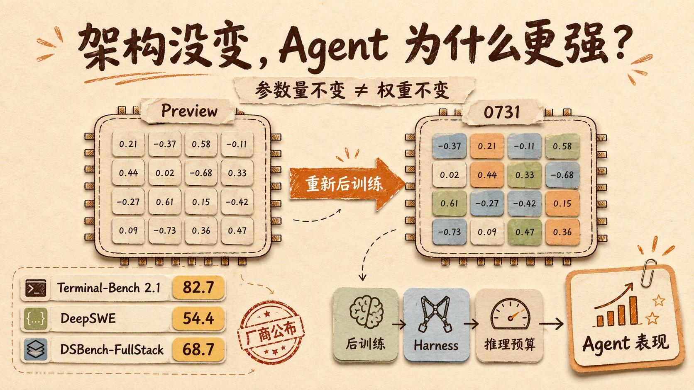
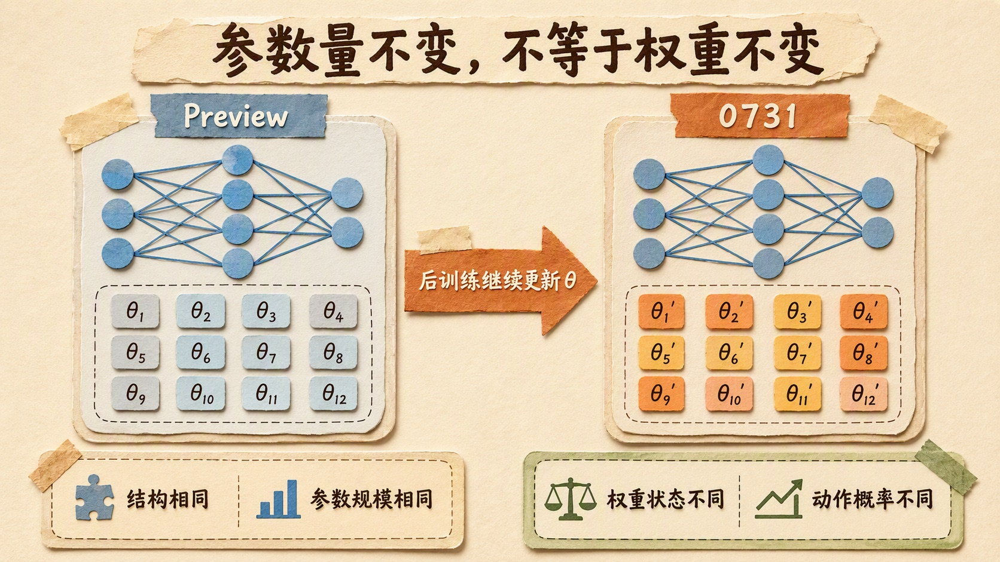
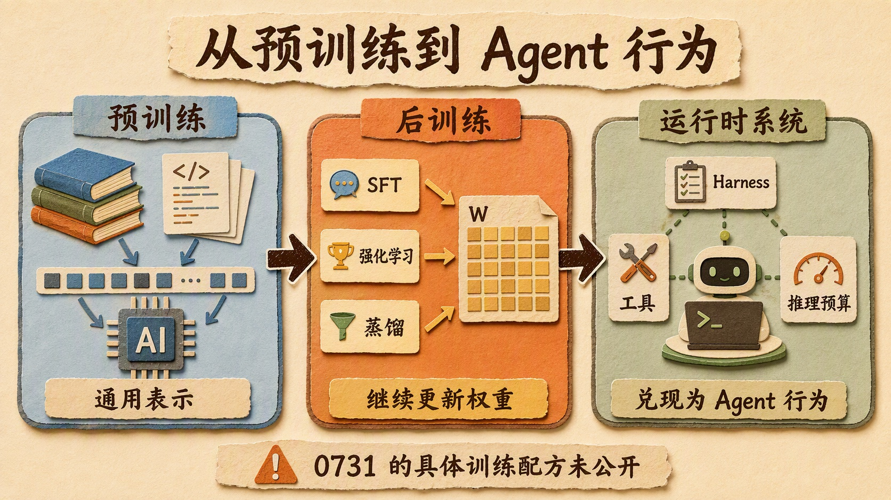
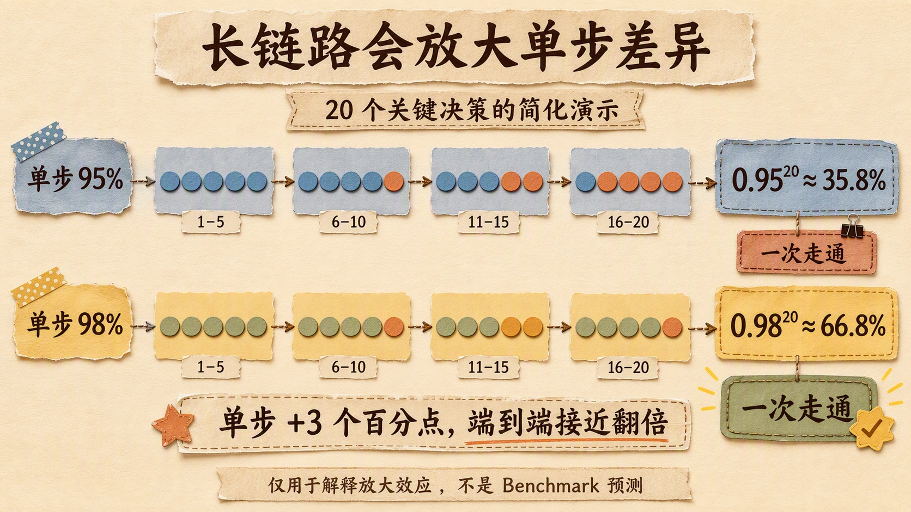
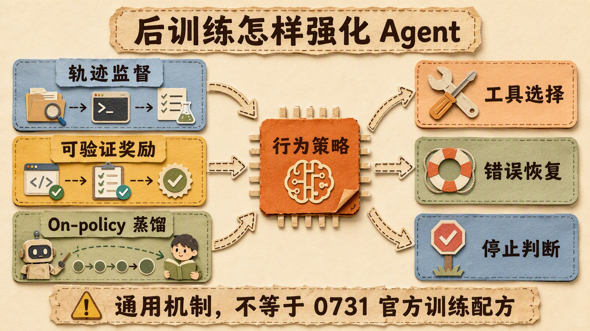
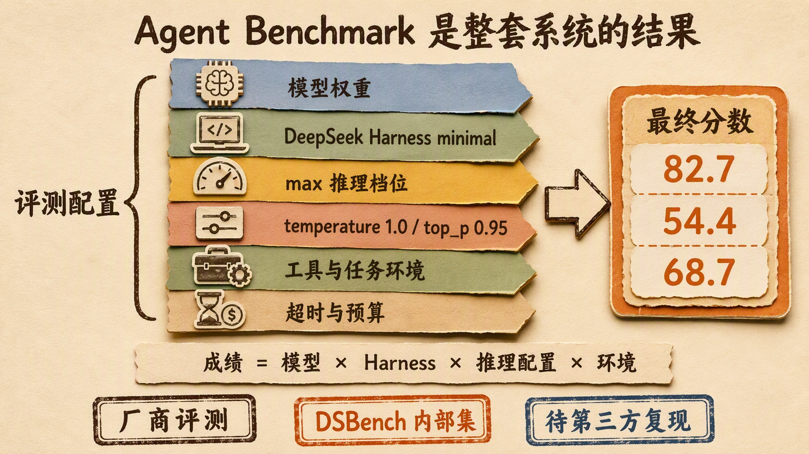

架构和参数量没变，Agent 为什么还能变强？拆解 DeepSeek V4-Flash-0731 的后训练逻辑

2026 年 7 月 31 日，DeepSeek 更新了 deepseek-v4-flash API。
官方公布的成绩很抢眼：Terminal-Bench 2.1 为 82.7，DeepSWE 为 54.4，内部测试集 DSBench-FullStack 为 68.7。几项指标都指向同一个方向——新版在终端操作、软件工程和多步骤 Agent 任务上的表现明显改善。
更反直觉的信息藏在更新日志的最后几行。
DeepSeek-V4-Flash-0731 保持了与 Preview 版本相同的模型架构和规模，官方对变化的描述只有一句：重新进行了后训练，也就是 re-post-trained。
没有换架构。
没有增加参数量。
为什么 Agent 能力还能出现这么大的变化？
要解释这个问题，先得修正一个很容易被忽略的概念：参数量没变，不等于参数没变。
这一个字的差别，恰好就是理解这次更新的入口。

参数量没变，但权重已经不是原来的权重
DeepSeek 官方说的是 same model architecture and size，也就是模型架构和规模保持一致。
按 V4 技术报告，DeepSeek-V4-Flash 的模型主干是一个 MoE，规模为 284B 总参数、每个 Token 激活约 13B 参数，上下文长度为 1M。0731 模型卡同时说明，它保留了 DSpark Preview 的推测解码模块；Hugging Face 页面因此显示整个 checkpoint 仓库约 304B 参数。讨论参数规模时需要区分模型主干与附加的推测解码模块，能够确认的是 0731 没有在 Preview 基础上继续扩容。
但这些信息只说明模型里有多少个参数槽位，以及这些槽位怎样连接。
它没有说每个参数槽位里的数值保持不动。
大模型训练可以抽象成不断更新一组权重：
1 | 模型结构：规定参数怎样连接 |
后训练仍然是训练。
无论采用监督微调、强化学习还是蒸馏，只要优化器继续根据训练信号更新模型，权重就会移动。网络拓扑没有变化，参数个数也没有变化，但模型面对同一个状态时，对下一段文本、下一次工具调用和下一步动作的概率分布已经不同。
如果把模型写成一个带参数的函数 fθ(x)，架构和参数量决定了函数的形状与容量，后训练改变的是 θ 的具体取值。
同样是 284B 参数，可以对应许多组不同的 θ。
它们当然可以表现得很不一样。
这就像两套完全相同的控制系统，传感器、执行器和线路数量都一样，但控制器里的策略参数经过重新标定。硬件规格表没有变化，面对弯道、湿滑路面和突发障碍时的动作却会改变。
所以更准确的说法不是「DeepSeek 什么都没改，能力却变强了」。
而是：DeepSeek 没有扩大模型，但用新的后训练把同一规模的模型推到了另一个权重状态。
预训练和后训练，不是“智商”与“习惯”那么简单
很多科普文章喜欢把预训练比作学习知识，把后训练比作学习怎么做事。
这个类比有帮助，但容易把边界画得太死。
预训练通常让模型在海量语料上做下一 Token 预测。它在这个过程中学习语言结构、代码模式、事实关联和大量潜在表示，是模型获得通用能力的主要阶段。
后训练则从预训练得到的 checkpoint 出发，用更聚焦的数据与目标继续优化。它可能包括指令微调、偏好优化、强化学习、领域专家训练和模型蒸馏。
两者的训练目标确实不同。
但不能因此写成「预训练管智商，后训练只管习惯」，更不能断言「没重做预训练，所以模型懂多少完全没变」。
后训练会改变权重，自然也会改变知识能否被稳定调用、推理路径怎样展开、面对不确定信息时是否校验、工具失败后如何恢复。训练数据中如果包含新的领域材料，也可能注入一部分任务相关知识。
架构和参数规模提供的是能力空间。
训练数据、优化目标和训练方法决定模型最后落在这个空间的什么位置。推理预算、提示词和 Harness 又决定这部分能力能否在任务中被调用出来。
DeepSeek 这次没有建一座更大的厂房。
它调整的是厂房里每条生产线怎样协作。

Agent 测的不是一道题，而是一条轨迹
为什么同样一次后训练，在 Agent 测试上特别容易显出差距？
因为 Agent 任务和传统问答测的不是一件事。
普通问答通常只关心一次输出。给定问题，模型生成答案，评分器判断对错。
Agent 任务是一条连续轨迹。
模型先读取环境和任务，决定是否搜索文件；拿到结果后选择下一条命令；命令报错时判断是参数写错、依赖缺失还是路径不对；修改代码后还要运行测试、理解失败信息、继续修复，直到满足验收条件或耗尽预算。
这条链路里至少包含几类不同能力：
- 能不能正确理解当前状态；
- 能不能选对工具与参数；
- 能不能从工具结果中提取有效反馈；
- 发现失败后会不会换策略；
- 能不能管理长上下文与剩余预算；
- 什么时候应该继续，什么时候应该停止。
单步看，每一项改善可能都不夸张。
放进长链路，结果会被放大。
可以做一个极度简化的演示。假设一个任务包含 20 个关键决策，并且暂时把每一步看成相互独立。如果每一步做对的概率是 95%，整条轨迹一次走通的概率大约是：
1 | 0.95²⁰ ≈ 35.8% |
如果单步正确率提高到 98%：
1 | 0.98²⁰ ≈ 66.8% |
单步只提高了 3 个百分点，端到端成功率却接近翻倍。
真实 Agent 决策当然不独立，失败也可能恢复，这个算式不能拿来预测 Benchmark 分数。但它揭示了一个很重要的工程事实：Agent 能力对连续决策质量极其敏感。

工具参数少错一次，模型就少走一条错误分支。
测试失败后多读懂一行日志，后面几轮都可能被改写。
更早意识到当前路径无效，Token、时间和工具预算就能留给新的尝试。
后训练不需要凭空给模型增加一种全新的知识，只要让已有能力在每个决策点上更稳定，最终任务完成率就可能出现明显变化。
后训练到底能怎样强化 Agent
关于 0731 这次重训，DeepSeek 没有公开训练数据、奖励函数、SFT 与 RL 的比例，也没有给出消融实验。
所以我们不能把某一种具体配方写成这次更新的事实。
能确认的是，DeepSeek-V4 技术报告披露过 V4 系列的一般后训练思路：先通过 SFT 与基于 GRPO 的强化学习培养不同领域的专家，再用 on-policy distillation 将这些领域能力整合进统一模型。
这个框架可以帮助我们理解后训练为什么有能力改变 Agent 行为，但不能直接等同于 0731 的完整训练流程。
从通用原理看，几类训练信号对 Agent 特别重要。
轨迹监督，让模型看到完整的工作过程
普通代码问答数据常常只有「题目—答案」。
Agent 训练数据更有价值的部分，是中间轨迹：为什么先搜这个文件，为什么选择这条命令，工具返回错误后怎样更新判断，哪些修改必须在运行测试后才能接受。
高质量轨迹能让模型学习状态与动作之间的对应关系，而不是只模仿最后那段正确代码。
不过，DeepSeek 没有说明 0731 是否使用了怎样的 Agent 轨迹，也没有公布数据规模。这里只能作为解释后训练的一般机制。
可验证奖励，把目标从“像正确”改成“真的完成”
代码与终端任务有一个天然优势：许多结果可以执行验证。
代码能不能编译，测试有没有通过，命令是否产生目标文件，服务能不能启动，都可以形成相对明确的反馈。强化学习可以利用这些信号，提高最终完成任务的动作序列概率，降低那些文字解释很漂亮、结果却没有交付的策略概率。
这种任务级信号与 Agent 的目标更接近。
模型不只是生成看起来合理的下一句话，而是在一连串动作之后争取通过验收。
同样需要强调：这是 Agent 后训练常见且合理的技术路径，不是 DeepSeek 对 0731 奖励机制的公开披露。
On-policy 训练，减少“老师会做、学生不会走”的错位
离线数据来自固定的专家轨迹，但模型真正运行时会进入自己的状态分布。
它可能在第三步就走到专家数据从未覆盖的错误目录，也可能产生一条格式略有问题的工具调用。后面的决策必须从这个新状态继续，而不是回到完美示范里。
On-policy 方法让训练更多地围绕当前模型自己生成的轨迹展开，再对这些轨迹进行评估、强化或蒸馏。这样更容易暴露真实运行时的错误分布。
DeepSeek-V4 报告中的 on-policy distillation 正是这个方向：不是只让统一模型背诵静态答案，而是在学生自身分布上吸收领域专家给出的指导。
对于长链路 Agent，这类分布对齐往往比多背几段标准答案更关键。

82.7、54.4 和 68.7，应该怎样读
文章写到这里，很容易得出一个过于轻松的结论：后训练让 DeepSeek 的 Agent 能力大幅跃升，而且已经被三项测试证实。
先别急。
这三个数字都能在 DeepSeek 官方更新日志中找到，但证据等级并不相同。
Terminal-Bench 2.1 是公开基准，任务要求 Agent 在容器化终端环境里完成调试、构建、数据处理和安全等复杂工作。DeepSWE 也是公开基准，由 113 个原创的长周期软件工程任务组成，覆盖 91 个代码仓库和 5 种语言。
DSBench-FullStack 则是 DeepSeek 自己的内部全栈开发测试集。
更关键的是 Harness。
DeepSeek 明确说明，0731 在公开 Code Agent 基准上的评测使用了 DeepSeek Harness minimal mode，该 Harness 当时仍标注为待发布；推理档位使用 max，采样参数为 temperature=1.0、top_p=0.95。
截至 2026 年 8 月 2 日，Terminal-Bench 2.1 官方公开榜单尚未收录 0731 的 82.7，DeepSWE 的公开榜单也没有收录 54.4。因此这两个数字应该写成 DeepSeek 公布的厂商评测结果，不能写成基准方已经完成独立复现。
DeepSWE 的差异尤其值得留意。
DeepSWE 公布的榜单统一使用 mini-swe-agent，目的是在同一 Harness 下比较模型。DeepSeek 的 54.4 则来自自己的 Harness。测试集相同，不代表评测配置相同，两组数字不能直接混在一张排行榜里横比。
Harness 会决定模型看到什么系统提示、拥有哪些工具、怎样保存状态、怎样处理超时、何时压缩上下文，也会影响失败后的恢复方式。
模型是驾驶员。
Harness 是车辆、仪表盘、导航与赛道规则。
只报驾驶员名字，不报整套配置，很难解释端到端成绩究竟由什么贡献。
这并不是说 82.7 或 54.4 不可信。
更稳妥的结论是：DeepSeek 的厂商测试显示，0731 在其指定 Harness 与最高推理档位下取得了很强的 Agent 表现；提升有多大、其中多少来自新权重、多少来自 Harness 与推理预算，还需要同条件对照和第三方复现。

Responses API 和 Codex 适配，算不算能力提升
这次更新还有一项工程变化：V4-Flash 增加了 Responses API 格式兼容，并提供了针对 Codex 的适配配置。
这件事不能与后训练混成一件事。
Responses API 是模型与 Agent 运行时之间的协议。它负责表达多轮消息、工具调用、推理状态和输出事件。Codex 适配则进一步告诉客户端模型支持什么工具格式、上下文长度、推理档位与补丁操作。
这里的「支持」也要读得精确一些。DeepSeek 实现的是 Codex 所需的兼容子集，不是 OpenAI Responses API 的完整复刻。官方兼容表显示，function、服务端 web_search 和 Codex 使用的 apply_patch 可以工作；previous_response_id 与 conversation 不受支持，API 仍然无状态；file_search、code_interpreter、computer_use 和 mcp 等内置工具会被忽略。
协议适配不会自动改变模型 checkpoint 里的权重。
所以它不是 0731 模型变强的训练原因。
但也不能说接口对 Agent 表现完全没有影响。
如果协议转换会丢失工具调用信息，推理状态不能正确续接，或者补丁格式与客户端不匹配，再强的模型也可能在接入层频繁失败。原生支持可以减少这些摩擦，让模型已有能力更完整地进入真实工作流。
这里需要分清两个指标：
- 模型策略能力：在给定状态下能否做出更好的下一步决策；
- 系统兑现能力：协议、Harness 与工具能否把这项决策正确执行出来。
后训练主要改变前者。
Responses API 与 Codex 适配主要改善后者。
用户最终感受到的是两者相乘后的结果。
这次更新真正说明了什么
DeepSeek-V4-Flash-0731 最值得讨论的，不是「小改动刷出了高分」。
它提醒我们，大模型的版本差异不能只看架构图和参数规模。
同一套架构可以对应不同权重。
同一组权重可以搭配不同推理预算。
同一个模型可以运行在不同 Harness 里。
同一项公开 Benchmark，也可能因为工具、提示模板、超时和采样设置不同，得到很不一样的结果。
所以以后再看到「模型结构没变，为什么能力变强」时，可以按四层来判断：
| 层次 | 需要追问什么 |
|---|---|
| 架构与规模 | 网络拓扑、总参数和激活参数是否变化 |
| 权重与后训练 | 是否产生新 checkpoint，优化了哪些行为分布 |
| 推理配置 | reasoning effort、上下文、采样参数和预算是否相同 |
| Agent Harness | 工具、提示、状态、重试与验收方式是否相同 |
只看第一层，很容易把「参数量没变」误读成「模型完全没变」。
只看 Benchmark 分数，又容易把模型、推理预算和 Harness 的贡献全算到权重头上。
这次我们能够确认的事实并不复杂：DeepSeek 在 7 月 31 日更新了 V4-Flash API；官方称 0731 保持相同架构和模型规模，只重新进行了后训练；官方公布的 Agent 成绩明显提高；公开 Code Agent 测试使用了尚未发布的 DeepSeek Harness 和最高推理档位；DSBench-FullStack 是内部测试集。
至于后训练到底使用了什么数据、奖励机制和训练流程，DeepSeek 没有公布。
这里应该把未知留在原地。
写在最后
模型升级并不总要从扩大参数开始。
预训练决定了大量通用表示从哪里来，后训练则可以继续改变模型如何调用这些表示、如何选择动作、如何面对失败，以及如何把一次次局部判断串成可验收的结果。
Agent 把这种差异放大了。
因为它不只问模型会不会写一段代码，而是要求模型在真实环境里连续做对很多件事。单步少犯一点错，整条轨迹就可能少绕很多路。
但评测 Agent 时，也不能只盯着模型名字。
82.7 背后还有 Harness、max 推理档位、采样参数、工具与验收环境。只有这些条件被公开并复现，我们才能知道提升究竟落在模型权重的哪一部分，又有多少来自整套系统。
所以对 DeepSeek-V4-Flash-0731，最准确的判断不是「参数没变，模型突然变聪明了」。
而是：
参数规模没有增加，权重和行为策略已经改变；厂商结果显示 Agent 表现显著改善，真实增益仍需在同一 Harness、同一预算和同一验收标准下继续验证。
模型没有换一副更大的骨架。
但它已经不是原来的那组权重了。
参考资料
- DeepSeek, API Change Log：DeepSeek-V4-Flash Update
- DeepSeek, DeepSeek-V4-Flash-0731 Model Card
- DeepSeek, DeepSeek-V4 Technical Report
- DeepSeek, Integrate with Codex
- DeepSeek, Responses API 兼容性明细
- Terminal-Bench, Terminal-Bench 2.1
- Harbor Framework, Terminal-Bench 2.1 Repository and Submission Rules
- DataCurve, DeepSWE Benchmark and Leaderboard
- Huang et al., DeepSWE: Measuring Frontier Coding Agents on Original, Long-Horizon Engineering Tasks